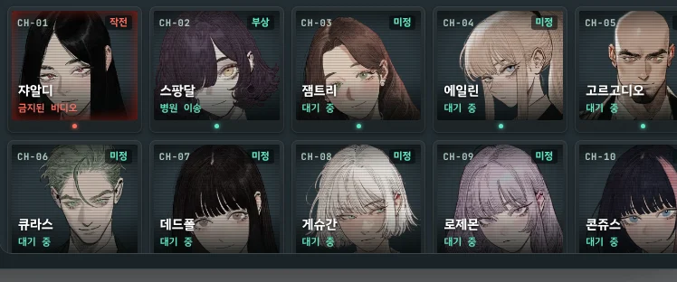
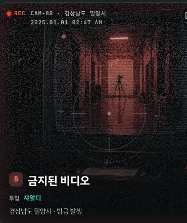
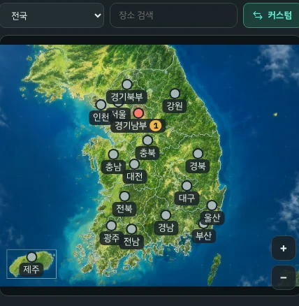

괴이 ː ANOMALYRISUAI PLUGIN + CARD
출근길 지하철,
단골 편의점,
오래된 아파트.
단골 편의점,
오래된 아파트.
당신이 아는 서울 뒤편에, 괴이가 산다.
현대 대한민국을 무대로 한 괴담 시뮬레이션 RP 봇. 채팅 한 줄이 도시 전체를 움직이는, RisuAI 전용 플러그인 + 카드.
받으러 가기 →무료 · 한국어 / English · 자동 업데이트

01THE BOARD
당신이 글을 쓰지 않는
동안에도 이 도시는
돌아간다
보통의 RP 봇은 당신이 입력한 만큼만 세계가 움직인다. 이 봇은 응답이 한 번 올 때마다 플러그인이 상황판을 한 바퀴 돌린다. 지도 어딘가에 새 괴이가 생기고, 이미 생긴 사건은 이야기 속 시간에 따라 번지거나 저절로 끝난다. 당신이 밀양의 폐가에 가지 않으면 요원이 대신 가거나, 아무도 가지 않은 채 피해만 늘어난다.
상황판의 CCTV에는 그 순간의 현장이 뜨고, 아래 모니터 벽에는 요원 열두 명이 지금 어디서 무엇을 하는지가 응답마다 바뀐다. 현장 하나를 과녁으로 찍고 요원을 붙이면, 다음 응답의 첫 문장은 그 현장 앞에서 시작된다.

MONITOR WALL · CH-01 쟈알디 작전 · CH-02 스팡달 부상

CAM-80 · 경상남도 밀양시 · 02:47

MISSION MAP · 경기남부 1

INCIDENT REPORT · RPT-0101-01 · 02:47 투입 · 04:11 종료
02AFTER ACTION
현장에서 나온 뒤에는
보고서가 남는다
사건이 종료되는 응답이 오면 플러그인은 그 순간의 상황판과 인물 기록과 가계부를 잘라 한 장의 보고서로 묶는다. 모델에게 다시 써 달라고 부탁하지 않는다. 언제 발생해 언제 투입됐고 언제 끝났는지, 그 사이 상황판에 찍힌 경과가 시각 순으로, 함께 간 요원이 어떤 상태로 돌아왔는지, 그 사건 동안 누구의 호감이 얼마나 움직였고 돈은 얼마를 썼는지가 그대로 남는다.
당신이 출동한 사건은 전체 보고서로, 요원이 혼자 처리한 사건은 간이 보고서로 일지에 날짜별로 쌓인다. 아끼는 보고서는 고정해 두면 상한에 밀려 지워지지 않고, 한 장짜리 이미지로 뽑아 공유할 수 있다.